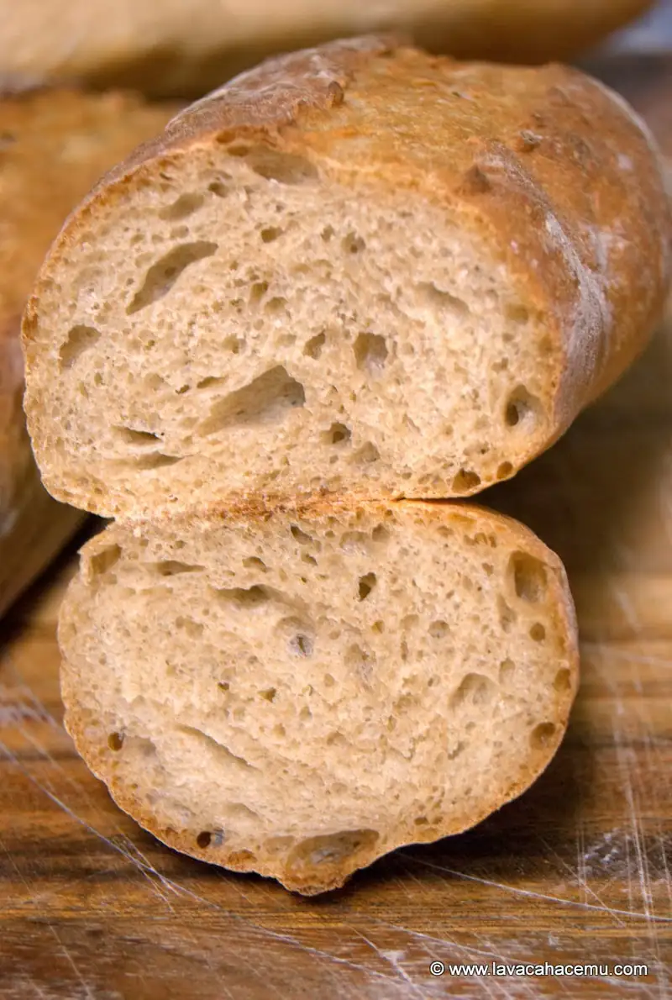

Pan Integral
{kind=link}

{kind=link}
Ahora que he estado reviviendo el blog un poco, me di cuenta que no he puesto la receta del pan a como la he estado haciendo por un par de años, diría que perfectamente calibrada, pero siempre siento que se puede mejorar.
Ingredientes
- 250 gr harina integral
- 250 gr harina para pan
- 320 gr agua
- 200 gr masa madre @100% ¹
- 12 gr sal
Procedimiento
- Mezcla todo menos la sal hasta que se incorpore
- Reposa 30 minutos
- Agrega sal
- Reposa 15 minutos
- Estira y dobla
- Reposa 15 minutos
- Estira y dobla
- Reposa 15 minutos
- Estira y dobla
- Reposa entre 3 y 8 horas, "hasta que este"
- Aplasta y dale la forma que vas a hornear
- Precalienta el horno al máximo
- Reposa 30 minutos
- Hornea por 15 minutos
- Baja la temperatura del horno a 425F
- Continua horneando "hasta que este", dependiendo del tamaño de los panes, puede ser un total de 25 hasta 40 minutos
- Retira del horno y deja que se enfríe mínimo 15 minutos o hasta un par de horas para que termine de estabilizarse el interior
¹ Para la masa madre, o cultivo como le decimos aquí en la casa, mezcla partes iguales de agua y harina (con ~100gr es suficiente) y deja reposar en un lugar cálido alimentándolo con otros 100gr de agua y 100 gr de harina diario o hasta 2 veces al dia. Después de al menos 4 días, vas a saber que ya está cuando flote un a cucharada en un vaso con agua.
Aquí esta un video acelerado de como se va la masa madre de un estado desinflado a completamente inflado cuando lo alimentas.
Ya que esta lo suficientemente activa y estable, se puede guardar la masa madre en el refrigerador en un contenedor bien sellado. Y cuando la vas a usar, le echas lo que vas a necesitar partes iguales (por peso) de harina y agua la noche previa a hacer la masa para que hagas la masa del pan cuando este en el punto mas activo.